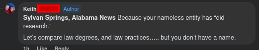
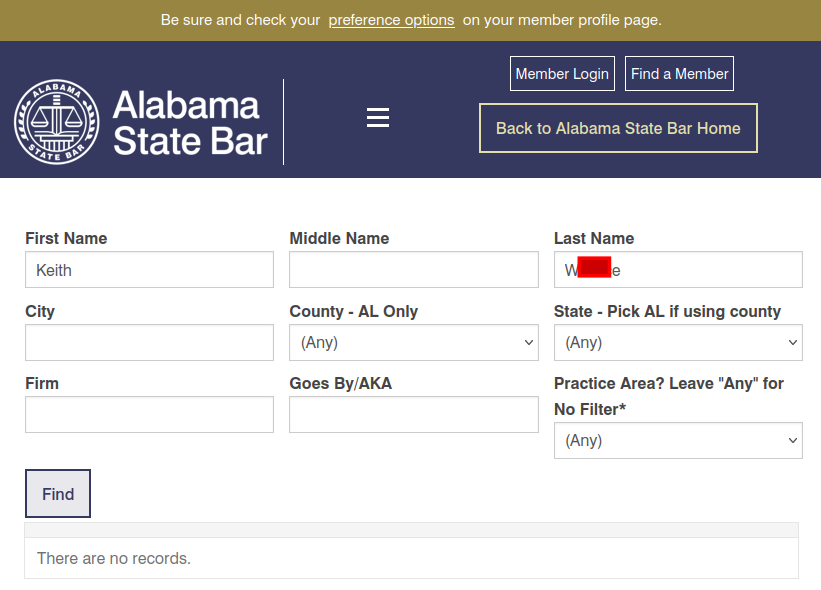
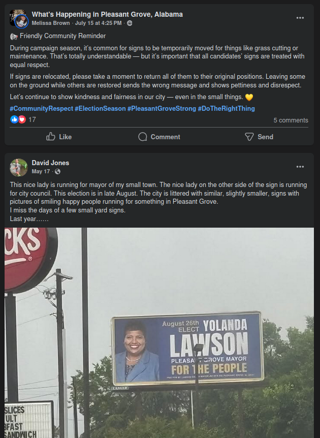

MYTH: Political signs are prohibited in public right of way/along streets and highways.
Addressing recent myth, with information from authoritative sources.
Sources: What's Happening in Sylvan Springs (Keith's post), Jefferson County Commission/Law Library, Sylvan Springs Zoning Ordinance, State of Alabama Law
Original Story: August 2, 2025
In the context of the upcoming Sylvan Springs municipal election, there has been some confusion regarding the legality of political signs along public roads. This article aims to clarify the situation based on local zoning ordinances and state law.
There was a post in the What's Happening in Sylvan Springs Facebook group, from Keith, asserting that it is illegal to have campaign signs along the road. Unless we are wrong in the interpretation of what was said, it sounds like there's an allegation that some law is broken somewhere in this year's election, by some candidate or another. It is usually best to discuss this at detail, because it isn't always clear cut when we're talking about law. Ultimately, we don't render legal advice, so talk to your attorney if you are concerned.
The Assertion Post
We were hoping that Keith was an attorney for some better insights, and things we could ask him about these regulations, based on this comment.

However, when we looked him up on members.alabar.com, couldn't find any record of him with the Alabama State Bar... Maybe he didn't mean it that way, and it was more of an attempt at an unsavory mean retort towards us, instead of saying he was a qualified lawyer. I don't know if he is or not.

Is this a real thing? What's going on in other areas?
The first thing to remember, is signs exist to advertise and be seen. It appears that the issue over campaign signs only came up because there is an election. It seems to be that many residents of Sylvan Springs would rather do away with elections, which is a troubling trend that shows there isn't that much support for our US Constitution. When we responded on Facebook highlighting that due to a requirement of equal protection, if such a law exists, it would have to apply to both candidates, otherwise it would be problematic. Unfortunately, as with many cases, the discussion became less than cordial. Our neighbors deserve better.
It is important to point out, that in places like Pleasant Grove, there are campaign signs everywhere. There's even a HUGE billboard! Sounds expensive. The same is in Hueytown, and many other places across our county. The only issue that seemed to come up historically in local news media has been related to the timely cleanup/collection of signs once the dust settles. If it were illegal to have signs (even on private property) as Mr. Keith suggested, how come for well over 30 years of memory this has been the way it always has been?
Examples from Pleasant Grove

A look at Alabama State Law
Referencing political signs on State Highways (i.e. AL-269 through Sylvan Springs), the 2024 Code of Alabama at this link is the full text that you would need, for Clay County, as an example. The same for Jefferson County can be found at this link. The people who clicked both links will see that Jefferson County does NOT have the same law prohibiting signs along state highways, in our county. It is "reserved", a placeholder in the law book. Navigate up, and you'll see 45-37-260 (Zoning) also makes no mention of political signs. What about 45-37-11 (Elections)? Nope again. 45-37A (Municipalities)? I think we're losing this game of Go Fish, with 1/3 of the myth busted so far. If there's a real attorney out there that has a different part of the books that they can directly reference, chapter and verse, where this really exists in Alabama law, we would be happy to update this article to that effect! Insulting/arguing on social media doesn't make something true.
The law is these signs are prohibited in Clay County. There's one similar for Baldwin and Lee county as well, and you would need to look at the specific counties in Alabama Code. We told you this was going to be a complex issue!
A look at Jefferson County Ordinance
This one was hard to find. See this link to the Jefferson County, AL Zoning resolution, last updated in 2017.
Looking under Article 13: SIGN REGULATIONS. There are four sections.
- Section 1301: Permits and Enforcement
No mention of election signs, but it noted "unless otherwise provided in these regulations," which might be important later. Note that they seem to be talking about signs that would be permanent, requiring a building permit. It would probably be hard to apply that to temporary campaign signs. - Section 1302: Sign Regulations by Zoning District
This section seems to deal with specifics of zoning districts, related to 1301. Once again, no election signs or campaign sign mention there, and it seems to talk about "monument signs" and subdivision entrances. - Section 1303: General Sign Regulations Applying to All Areas
1303.1: "In all zoning districts, the following signs shall be permitted without limitation":
A. Traffic signs, B. Legally required signs, C. Warning/No Trespassing Signs, D. Signs established by or by order of a government agency, E. Bus Stop, Taxi Stands, Transportation, F. Signs about parking/loading facilities, and finally, our favorite...
1303.01(g) Non-illuminated temporary real estate for sale signs, for rent signs, POLITICAL SIGNS," with limitation on size and how long it will be there.
In 1303.05, sign setbacks are defined as free standing being 0 feet from road right of way, or 25 feet from an undedicated public road. Are yall gonna really be as petty as to bust out tape measures now? Sigh...
1303.8 seems to refer to being in the middle of the street. What is the right-of-way when talking about highway? Let's find out at this link! Oh....wait. That's having to do with construction of a highway, so you can't throw signs there or obstruct roads, visibility? Got it. This might come up when the Northern Beltline comes through. We have not forgot about this... Law Insider definition shows it is property owned by the highway department. That means, not your private or town property necessarily. - Section 1304: General Regulations Applying to Billboards
Somebody call Alexander Shunnarah!
A look at Sylvan Springs Town Ordinance
Here's the latest copy that we have. There's a story as to why we obtained this, for a later time.
Page 23, temporary signs are defined. At Article 13: Sign Regulations, 1302.1(j) indicates that temporary signs are allowed in all zoning districts of Sylvan Springs. It doesn't get clearer than that.
This ordinance has been subject to a bit of ire, some supportive, others not so much due to selective behavior. There had been cases we know of, where there are still people living in motor homes today, which isn't approved. Some of those cases was where people discharged raw sewage into yards/wooded areas. Then there's the tree-dumping ground, which people mistakenly attribute to Aaron Wheeler (R), a mayoral candidate in the August 26, 2025 election. Here's some 2016 meeting minutes about the illegal dumping, page 5. Here's a WVTM 13 article. Lastly, we're going to have to wait on public record for the tree dumping, but the short version is, wrong Wheeler, different guy.
Conclusion
There is no law, in the USA, Alabama, Jefferson County, nor town ordinance, which prohibits either of the two candidates from having campaign signs, as long as it doesn't obstruct highway traffic or construction.
Opinion
We aren't lawyers, nor judges, so we aren't perfect like most Facebook experts. It is possible that we're wrong or missed something, and if we have, feel free to go on Facebook and angrily post, screeching about how we are horrible terrible human beings! :: catches breath dramatically::
Seriously though... if we've legitimately missed something, share with us the chapter/verse reference of the law you are referencing to, and we would be happy to issue an update that would let the truth be known. So far, this appears as just another attempt to silence campaign marketing, election discussion, in Sylvan Springs' first election in over 20 years.